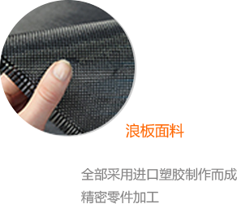
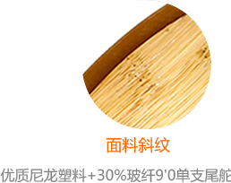
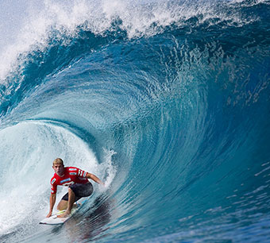
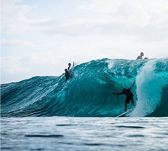

2016年12月5日
2016 PKRA世界职业风筝冲浪
Mauricio Tosano
通过数日的激烈角逐,最终凭借出色发挥来之比利时的Tack和波兰的Karolin得了最终的年度总冠军.作为本次巡回赛的核心亮点,组委会特设的中国选手资格赛中,来自三亚的李金光和何勇名也有出色的发挥,分列资格赛第一名和第二名,并且代表中国选手与其他17个国家的顶尖运员同台竞技2016年11月8日
2016 海南万宁冲浪大赛
Leroy Bellet
从2014年11月8日到2015年1月16日,两个多月时间,O'NEILL 冲浪海南公开赛、ISA中国杯、ASP海南精英赛、Gopro世界长版职业冲浪冠军赛、ASP国际女子短板职业冲浪资格赛等五项国际顶级赛事300多名选手聚焦日月湾,密集程度前所未有,而此前4年前的冲浪节,每届时长一周，三十平均只有2场


冲浪起源哪里
冲浪起源于夏威夷,而夏威夷冲浪最远可追溯到公元五百八十年间

什么是冲浪文化
冲浪文化是一个由冲浪爱好者、冲浪俱乐部、冲浪装备制造商、所有爱好冲浪的人共同价值观、信念的其文化形象。冲浪有什么好处
冲浪的好处有特别多:可以锻炼身体,恢复精力,排解压力,带来自信

冲浪必备装备是什么
除了冲浪板之外,冲浪也需要一些其他必须的装备,比如:衣服,鼻头,防滑垫等等2016年1月21日